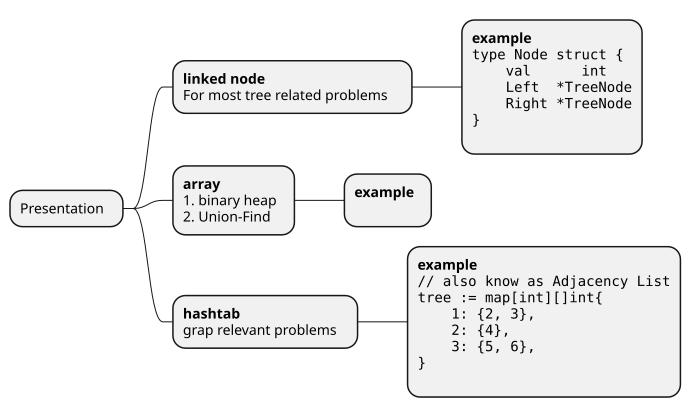
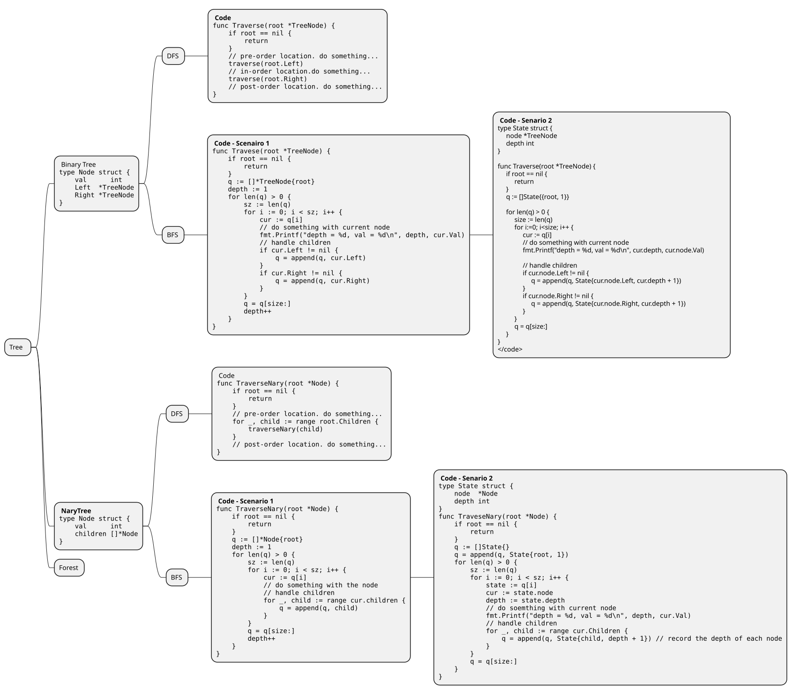
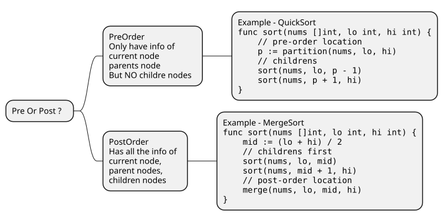
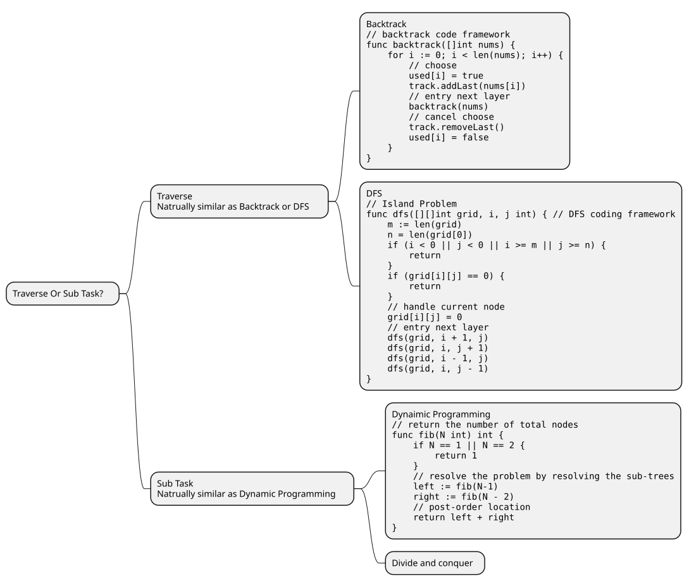

Natures
Presentation At Code Level

;Traverse
- BF
- Usually based on
Queue - Can also use recursive
- Usually based on
- DF
- PreOrder
- InOrder
- PostOrder
Natural Connection
The nature of
Binary Tree,N-ary TreeandForestare actuallySAME. The only differences are ONLY- How many children are there in the tree
- In
Forest, there are multiple tress - The presentation of
TreeandForestare different
Binary Tree -> N-ary Tree -> Forest

;Thinking Patterns
PreOrder V.S. PostOrder
Think about the Quick Sort and Merge Sort from the view of Binary Tree:

;前中后序是遍历二叉树过程中处理每一个节点的三个特殊时间点
二叉树的所有问题，就是在前中后序位置注入巧妙的代码逻辑，去达到目的.
仔细观察，前中后序位置的代码，能力依次增强。
前序位置的代码只能从函数参数中获取父节点传递来的数据。
中序位置的代码不仅可以获取参数数据，还可以获取到左子树通过函数返回值传递回来的数据。
后序位置的代码最强，不仅可以获取参数数据，还可以同时获取到左右子树通过函数返回值传递回来的数据。
所以，某些情况下把代码移到后序位置效率最高；有些事情，只有后序位置的代码能做。
Tree Traverse V.S. Sub Tasks
Two ways to resolve Binary Tree relevant problems:
- Tree Traverse.
Traverse - Recursive with sub trees.
Sub Tasks
二叉树解题的思维模式分两类：
1、是否可以通过遍历一遍二叉树得到答案？如果可以，用一个 traverse 函数配合外部变量来实现，这叫「遍历」的思维模式。
2、是否可以定义一个递归函数，通过子问题（子树）的答案推导出原问题的答案？如果可以，写出这个递归函数的定义，并充分利用这个函数的返回值，这叫「分解问题」的思维模式。
无论使用哪种思维模式，都需要思考：
如果单独抽出一个二叉树节点，它需要做什么事情？需要在什么时候（前/中/后序位置）做？其他的节点不用操心，递归函数会帮你在所有节点上执行相同的操作。
这两类思路分别对应着 回溯算法核心框架(and DFS) 和 动态规划核心框架。
Similarity to Backtrack, DFS and Dynamic Programming, Divide and conquer
动归/DFS/回溯算法都可以看做二叉树问题的扩展，只是它们的关注点不同：
动态规划算法属于分解问题（分治）的思路，它的关注点在整棵「子树」。它的着眼点永远是结构相同的整个子问题，类比到二叉树上就是「子树」。
回溯算法属于遍历的思路，它的关注点在节点间的「树枝」,即需要关注路径。它的着眼点永远是在节点之间移动的过程，类比到二叉树上就是「树枝」。
DFS 算法属于遍历的思路，它的关注点在单个「节点」。 它的着眼点永远是在单一的节点上，类比到二叉树上就是处理每个「节点」。
Compare the core code framework of problems of Backtrack, DFS and Dynamic Programming:

;